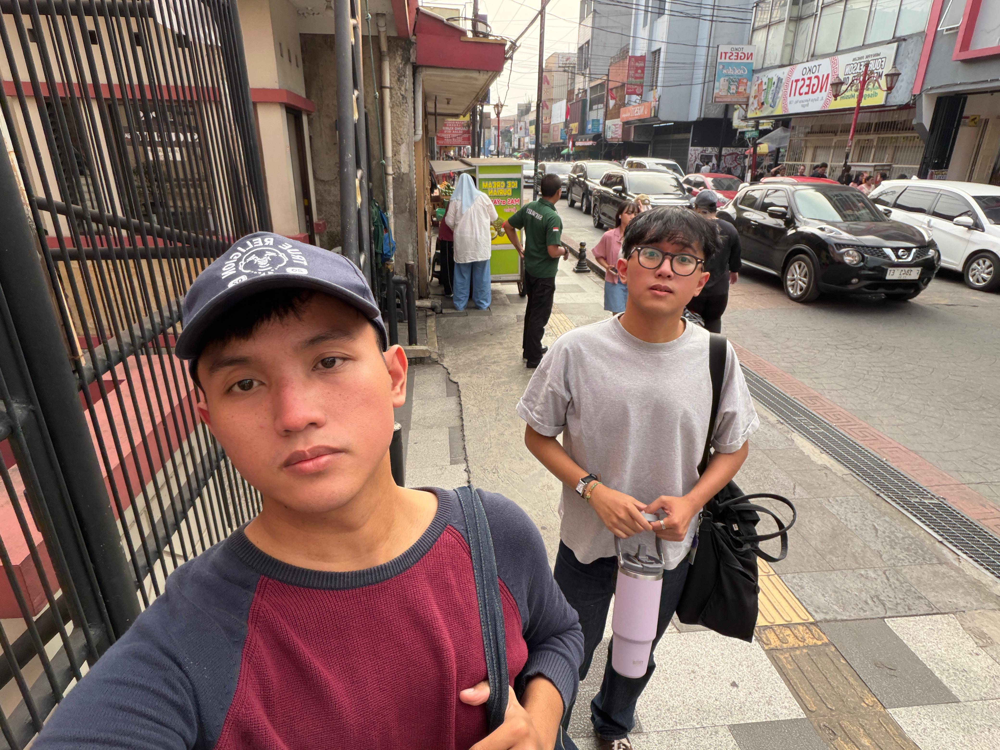
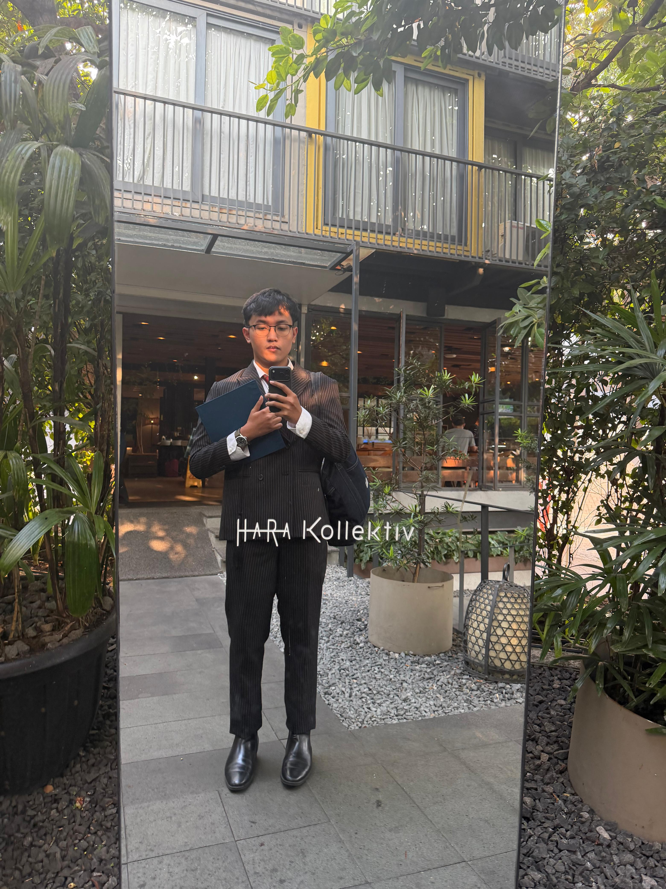

Life in Bits & Atoms
moments.photo

The Empathy-to-Production Architecture
prd_decision_tree.flowHow I Turn Human Frustration Into Permanent Code
A real PRD isn't just fluffy text boxes—it is an unambiguous logic tree that handles errors, isolates root causes, and guarantees safety before software touches real users.
The Battle Scars: Systems in Production
experience.logWhen airlines delay or cancel flights, passengers panic and airlines hide behind cryptic fare rules. We turned complex aviation regulations into an automated, transparent engine.
Powering loyalty for hundreds of world-class retail brands across Indonesia. Replacing manual spreadsheets with automated, trusted software.
Wearing steel-toed boots in mining, metals, and geothermal energy sites across Indonesia.
Selected Innovations
proof_points.lab3M PHB Bio-Mask: 100% Biodegradable PPE
Billions of plastic medical masks pollute our oceans and take 450+ years to break down. We engineered a surgical mask from bacterial biopolymers (PHB) grown on Indonesian sugarcane waste that safely composts in soil in 90 days.
Schneider HotSand: Storing Solar Heat in Sand
Imported lithium batteries are expensive and degrade fast in humid tropical climates. HotSand stores excess daytime solar energy in superheated local silica sand beds to provide hot water, crop drying, and clean power overnight.
The Physical Atelier: Canvas & Pigment
acrylic_on_linen.artWhy I Paint: Atoms Cannot Be Undone With a Git Commit
The textured dark red backdrop across this site is my original physical oil and acrylic painting on linen. In software, if you make a mistake, you can hit Ctrl+Z or roll back a release. In physical painting, every scrape of the palette knife leaves real texture on the fabric that cannot be erased.
This discipline shapes how I build systems: measure twice, respect the constraints of the real world, and craft with intention.
The Soundroom: Music & Playlists
spotify_curation.audio


Architectural Essays
View All Essays →Building an Autonomous Product Operating System: Beyond LLM Slop
Why standard AI code generation produces fragile code that breaks in production—and how to construct an autonomous multi-agent verification engine that guarantees zero bugs before software ever reaches customers.
Read Essay & Architecture Flowchart →